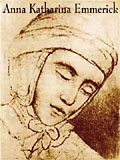

De la beata Ana Catalina Emmerich:
-
Yo era muy ordenada y limpia en el vestir, no por causa de los hombres
sino por respeto y consideración a Dios. Mi madre
a menudo no me vestía como yo deseaba, entonces
me iba a mirar en el agua o en el espejo y volvía a ordenar
mi vestimenta.
Vestirse con orden y limpieza hace bien al alma.
Cuando iba a tomar la santa Comunión en las mañanas de invierno, a oscuras, me vestía con el mismo cuidado que en otras ocasiones, porque lo hacía para honrar a Dios, y de ninguna manera para el mundo.
... 
Nunca me ha resultado sorprendente que Juan Bautista
aprendiese tanto de las flores y de los animales en el desierto,
pues cuando yo era niña todas las hojas y las florecillas
eran como un libro para mí, en el cual sabía leer.
Conocía la significación y belleza de sus colores y sus formas;
pero si hubiese hablado de esto su habrian reído de mí.
Cuando salía al campo, solía conversar con todas las criaturas,
pues Dios me había dado entendimiento de todo esto,
y yo me elevaba a la vista de las flores y de los animalitos...
Qué suave era todo eso!
...
Cuando niña, el Evangelio de San Juan era para mí
como luz y fuerza, como bandera.
En todas las necesidades y peligros decía yo con confianza:
"El Verbo se hizo carne y habitó entre nosotros".
Nunca pude comprender, aunque después lo oí de labios
de sacerdotes, que esto no pueda entenderse.
...
Mi padre me llevaba muchas veces al campo al
alba. Cuando salía el sol se quitaba el sombrero y hablaba
de Dios, que hace salir el sol tan hermoso sobre nosotros.
También solía decirme que era muy malo quedarse en la cama,
dejando que el sol salga y nos encuentre durmiendo; pues
de aquí proviene la destrucción de las casas, los campos
y los hombres. Yo una vez le dije: "No es mi caso,
porque el sol no da en mi cana". Mi padre respondió:
"Aunque tú no le veas, él ve todas las cosas y brilla
sobre todo". Yo meditaba estas palabras.
Cuando salíamos juntos, antes de amanecer, me decía
mi padre: "Mira, todavía no ha pasado ningún hombre
por aquí; nosotros somos los primeros.
Si tú rezas con devoción, bendeciremos el país y los campos.
Es muy hermoso salir así, cuando todavía nadie ha pisado
el rocío; aún está en el campo la bendición
de Dios; porque aún no se ha cometido en él
ningún pecado, ni se ha dicho ninguna palabra mala.
Cuando uno sale al campo y encuentra hollado el rocío,
parece que todo se ve manchado y corrompido"
...
... Entre tanto [*] José, con la ayuda de dos viejos
pastores, había preparado una comida frugal en la tienda
de los tres Reyes. Trajeron pan, frutas, panales de miel,
algunas hierbas y frascos de bálsamo, y lo pusieron
todo sobre una mesa baja, cuibierta por una carpeta.
José había conseguido estas cosas desde la mañana
para agasajar a los Reyes, cuya venida le había sido
anunciada de antemano por la Santísima Virgen.
Cuando los reyes volvieron a la carpa, vi que José
los recibía muy cordialmente y les rogaba que, siendo
sus huéspedes, se dignaran aceptar la humilde comida
que les ofrecía. Se puso al lado de ellos junto a la mesa,
y comenzaron a comer.
En esta ocasión San José no mostraba timidez alguna;
estaba tan contento que derramaba lágrimas de alegría.
Cuando vi esto, pensé en mi difunto padre, que siendo
un pobre campesino se vio obligado a sentarse a la mesa
en companía de muchas personas distinguidas, en ocasión
de mi toma de hábito. En su sencillez y humildad, al principio
había sentido mucho miedo; luego se puso tan contento
que llegó a llorar de alegría. Sin quererlo, ocupó el primer
lugar en la fiesta.
...
([*] Se trata acá de las visiones relativas al nacimiento de Jesús; tras la llegada de los Reyes Magos a Belén y la adoración del Niño)
La escena: restaurant o bar del centro porteño, mediodía, algún infortunado cumple años y sus compañeros de oficina lo festejan; y los de bar ponen la música del "happy birthday"; o eso se supone que vendría a ser; pero no es.
Es entendible, hay mucha gente con la región auditiva del cerebro completamente arruinada con FMs; tienden a creer que toda música exige la base rítmica pop standard de cuatro tiempos (y etc).
A ver si queda claro:
El "feliz cumpleaños" es así.
No así.
Son tres tiempos (repita: tres. Un-dos-tres).
Una nota (en inglés) sobre las "virtudes del ocio", en clave cristiana.
Nada que no diga Pieper en "El ocio y la vida intelectual". Y acaso menos aplicable a nosotros (latinos)... la tentación del activismo es menos importante por acá.
Igual, la agitación vana del llamado "mundo real", y la insólita (demoníaca?) ilusión de que eso es más sólido que la vida espiritual (contemplación, oración, vida interior y silencio....), eso vale lo mismo. Como la cita de Lewis que trae.
-
... Cuando salgo a caminar -no para ir a algún lugar, ni para
hacer ejercicio, solamente por disfrutar- se presenta
a mi vista la belleza de la Creación, y el amor y el poder
del Creador. Cuando no tengo plazos que cumplir, puedo
echar una mirada a toda mi vida, y percibir mis culpas y
mis debilidades, y también las bendiciones que me han tocado.
Puedo afrontar los errores (cosas que hice y cosas que omití
hacer) que en tiempos agitados tiendo a negar o a excusar.
Puedo reconocer mejor (aun percibiendo sólo una porción
de la realidad) la mano de Dios, actuando de maneras
inesperadas.
El ritmo de la vida moderna es una de las armas más eficaces del diablo. C. S. Lewis pensaba esto, más de 60 años atrás. En las "Cartas del diablo a su sobrino", un demonio relata cómo logró disuadir a un no creyente que se estaba acercando al cristianismo. En lugar de atacarlo por el lado intelectual, o espiritual, simplemente lo impulsó fuera de la biblioteca -donde estaba leyendo un libro cristiano-, a la calle :
- "... Una vez en la calle, la batalla estaba ganada.
Le puse a la vista un vendedor anunciando las noticias
del diario de la tarde, el colectivo 73 que pasaba... ya
antes de haber llegado al pie de la escalinata
se había convencido de que, por más ideas raras
que a uno le puedan pasar por la cabeza cuando
se está "encerrado entre los libros", una dosis
saludable de "vida real" (lo cual significaba
cosas como el vendedor de diarios, las noticias del diario,
el colectivo...) bastaba para dejar claro que aquellas
cosas raras no tenían verdadera consistencia."
Anoche leía algo sobre Santa Catalina de Siena, de sus cartas (llenas de exhortaciones, por no decir reproches) a los mandamases de la Iglesia, papas incluidos. Uno se imagina la época (fines siglo XIV) como "muy religiosa"; lo cierto es que -se trata de la época de "los Papas de Avignon"- en muchos aspectos (en muchos en los que abunda Catalina) la cosa estaba peor que ahora. Escribe ella a un nuncio apostólico en 1375:
-
... Cuando os pedí que trabajaseis en la santa Iglesia no quise referirme ni hablar de los trabajos que tengáis por las cosas temporales (aunque sean buenas) sino que debéis trabajar, principalmente con el Padre Santo y hacer lo que podáis para apartar de él a los lobos y demonios hechos carne, los pastores, esos que no atienden a otra cosa que a comer, hermosos palacios y a los grandes caballos. ¡Ay, que lo que Cristo adquirió en el madero de la cruz se malvierte en meretrices!
Os ruego que, aun con peligro de vuestra vida, habléis de esto al Padre Santo para que ponga remedio a tanta maldad y que, cuando llegue el momento de nombrar pastores y cardenales, no se hagan los nombramientos por lisonjas, por dinero o por simonía. Pedidle, en cuanto podáis, que preste atención y mire si el candidato tiene virtudes y buena y santa fama, y que no aprecie más al noble que al que se gana su pan, porque la virtud hace al hombre noble y grato a Dios. ...
Ayer Gerard comentaba sobre Juan Pablo II.
Yo tiendo a pensar -o a sentir- parecido.
Es difícil tener una perspectiva adecuada
para juzgar estas cosas (lo mismo vale para la situación
de la Iglesia Católica en el mundo hoy); y yo -crítico
y escéptico por principio en lo que respecta al hombre
en general, a las devociones y entusiasmos grupales
o sectarios,
a las adhesiones casi incondicionales a todo lo que no
sea el mismo Cristo- me esfuerzo en no ser demasiado
papista.
Pero justo me vino a tocar este Papa ... No
es fácil...
Ayer, misa en la Catedral; nos informan que este mes de septiembre viene dedicado especialmente a la Biblia (el mes se cierra con la fiesta de San Jerónimo, lo cual cae justo). Sermones a propósito del tema, por lo tanto. En el de ayer, el cura recomendó una versión, "especial para argentinos": la traducción que realizaron Mons. Trusso y Mons. Levoratti, y que se editó con el nombre de "El libro del pueblo de Dios". Dijo que, además de ser "la mejor", es la que se usa en las lecturas de la misa.
Acá la califica de "muy contemporánea y de gran sencillez y belleza".
No seré yo quien diga que la obra (monumental, en verdad) de traducción y comentario es buena, regular o mala. Pero, desde la cómoda irresponsabilidad que me da el blog, voy a rezongar contra una sola cosita:
-
[Lucas 1:15] (la aparición del Angel a Zacarías, anunciándole el nacimiento
de Juan Bautista)
... Zacarías quedó desconcertado y tuvo miedo.
13 Pero el Angel le dijo: "No temas, Zacarías; tu súplica ha sido escuchada. Isabel, tu esposa, te dará un hijo al que llamarás Juan.
14 El será para ti un motivo de gozo y de alegría, y muchos se alegrarán de su nacimiento,
15 porque será grande a los ojos del Señor.
No beberá vino ni bebida alcohólica; estará lleno del Espíritu Santo desde el seno de su madre,
16 y hará que muchos israelitas vuelvan al Señor, su Dios. ...
En otras versiones en español traducen simplemente "ni vino ni sidra" , o "ni vino ni licor", o cualquier cosa parecida. Y todos -sí, todos- entendemos, y nos resulta natural.
Ah, y la misa aquella se cerró con la "Oración por la patria". Coherencia, como dicen.
PS:
Ignacio me aporta otro ejemplo de esa traducción, exactamente
en la misma línea: En la otra Anunciación, la "objeción"
de María (Lc 1-34 ), en lugar del clásico (y claro, y adecuadísimo)
"Como será eso, si yo no conozco varón? ",
estos traducen:
".... Cómo puede ser eso, si yo no tengo relaciones con ningún
hombre?". De terror.
Y dado que lo único que les importa
es que quede claro 'el sentido', no sé
por qué no tradujeron "... no tengo relaciones sexuales con ningún hombre"...
"Tengo un amigo que es amoral, no tiene ideología ni ética. Yo lo quiero lo mismo, porque por lo menos no es facho. [...] "
Leído en un blog, de los de por acá; y no de los peores.
- ...
The Mass requires either a Priest or a Bishop to be celebrated. The celebrant stands in the place of Christ for the Holy Sacrifice of the Mass. The priest/Bishop are issued in male models only. If you find the other model- please refer to the "Emergency Church Exit Procedures"
...
Cantors also have the strange speech impediment where they are unable to say "priest". They will use words instead like "presider" to overcome this problem.
...
If the Confeitor prayer is used then strike your breast when you say "through my own fault".
If you are without sin like most American Catholics who don't go to confession, then strike someone else's breast.
Gerard (y Narwen, claro) recuerda que hoy se cumplen 30 años de la muerte de J. R. R. Tolkien.
Y cita un artículo (en inglés) sobre la amistad de Tolkien y Lewis.
Hay demasiado material interesante en los blogs católicos yanquis estos días, no doy abasto para leer, menos para reseñar.
Pueden ir pasando por lo de Mark Shea, Amy, Disputations ... y, sobre todo, este notable post de Karen.
Después tal vez comento algo...
PD: También es interesante esto de Video Meliora... :
" ... dice la Radio Cristiana que la mayor parte de las
conversiones, por lejos, son inducidas no por la predicación,
ni por los libros, sino por los esposos. Y el 80% de esos
casos se trata de hombres convertidos por sus mujeres,
pues dice Mr Strobble: 'estudios demuetran que los hombres
se resisten más al Evangelio' ...."
Hmmm....
De dos cartas de Castellani, en que trata el tema de la santidad:
-
...
Tengo dos ideas desacostumbradas acerca de la santidad:
una, que la de hoy día es diferente de la de otros tiempos;
dos, que los santos de hoy no parecen santos -muchos dellos almenos.
Y estoy por tornar la proposición: que además, los que parecen santos hoy día, no lo son.
Esto parece responder a mi experiencia.
He topado en mi vida con «santos notorios» (el jesuita español X, el salesiano Y) y no les he dado mi voto ni confirmado el diploma; por otro lado, me parece que el luterano Suero Kirkegor (así habría que decir en español al filósofo Soeren Kierkegaard) y la judía Simona Weil fueron santos modernos; y los dos parecen dementes y herejes; tenidos de muchos por tales.
La santidad no puede ser imposible, puesto que Dios nos ha creado para ella. El medio parece ser el «desapego» de todo lo que no sea Dios, incluso del propio Yo. El camino a ese desapego es la oración.
Todos los santos han dicho que el atajo para llegar a la santidad es algo que Usted no necesita ir a buscar muy lejos: la tribulación.
Simona Weil ha teorizado de una manera estremecedora acerca de la tribulación en sus grados extremos, como la de Job, a la cual ella llama
«le malheur» -o sea, el infortunio [o la desdicha]. Es un estado casi infernal que no tiene más salida que la santidad y en el cual Dios pone a muy pocos, creo; y el Diablo pone a bastantes.
Y, supongo yo, no sin sus consentimientos -en el caso de Dios.
...
...
El genio y el santo son dos categorías diferentes y entre sí incompatibles. De modo que Usted al llamarme genio me niega la posibilidad de llegar a santo.
El genio nace genio; el santo no nace santo. La santidad es una cosa sobreañadida. De modo que en el santo hay una división, una dualidad (natura y gracia), mientras que en el genio hay una soberana unidad.
El genio es el supremo valor de la línea de la naturaleza. Es el hombre del Destino; mientras el santo es el hombre de Dios.
El santo, aunque tenga mucho talento, no puede llamarse genio sin injuria. "Genio religioso" llama Renán a Jesucristo. San Juan de la Cruz y San Francisco de Asís no son genios. Genios son Napoleón, Goethe, Shakespeare, Baudelaire.
El genio triunfa en este mundo, el santo fracasa.
Al santo lo único que le interesa es una buena muerte; al genio le interesa vivir , y sabe vivir.
El genio vive en la inmediatez; el santo, en la profundidad, sepultado en Cristo.
Usted dice que al genio no lo entienden las medianías. Es un error. El genio es inteligible, no hay misterio en él. Busca la grandeza exterior y la gente admira su grandeza. Es una fuerza de la naturaleza.
El genio tiene la autoridad de su inteligencia teórica o práctica, el santo se apoya en la autoridad de Dios. No creemos a San Pablo porque haya sido muy inteligente, sino porque llevaba la palabra de Dios.
El santo vive en el plano religioso y el genio en el plano estético: sus fines e ideales son tan diferentes que no es posible componerlos entre sí; y los fines son los que determinan la personalidad.
Claro que Usted me llama "genio" inocentemente y con la mayor buena voluntad. Pero yo por nada del mundo quisiera serlo. Yo quisiera ser un buen cristiano, lo cual no está en la línea de la genialidad.
El cristiano está en la línea del amor. Aunque tenga talento, el talento no es el ápice de su personalidad, es una cosa secundaria y "absorbida". La "caridad" no es el ideal del genio; aunque pueda por otra parte ser caritativo, difícilmente.
El genio todo lo atrae a sí y lo refiere a sí; el cristiano se da.
Discúlpeme estas filosofías. Con mi afecto.
L. Castellani.
-
«Santa Teresa [de Jesús] buscó amistades
en todas partes, porque las necesitaba.
Uno de los reproches más vehementes
que contra ella concibieron era que buscaba
amistades no monjiles y hasta ¡masculinas!
El creer que el claustro, la clase o el clan a que pertenezco es un mundo completo, agota la creación, y en él se halla todo cuanto un hombre puede necesitar es una de las vanidades más ridículas y siniestras.
Según las palabras de Cristo, la misma Iglesia Católica es una cosa abierta, y fuera de sus recintos se encuentran almas que le pertenecen sin saberlo.
Leonardo Castellani
Hoy, (no más de cuatro años después, el libro fue editado en 1999) me impresiona con una fuerza extraña ( sobre todo, que sea Castellani el que lo dice), y me parece una advertencia necesaria, oportuna... urgente.
Notable qué distinto resuena una misma cosa en distintos oídos, (o en los mismos oídos, con esos pequeños cambios en la afinación interna que a veces trae el tiempo...). Para las palabras que no necesitamos escuchar, somos sordos.
Pero más que lo anterior, me sorprendió (y muy gratamente)
encontrar en el mismo libro un elogio a Simone Weil. Yo sólo
recordaba una referencia muy ambigua (de "El evangelio
de Jesucristo", si no recuerdo mal), y más bien tendía a
creer que Castellani la consideraba una hereje, o poco menos.
Hace poco algunos conocidos conocedores me habían
asegurado que no era así ... pero también uno tiene algo de
Tomás.
Va en el otro post.
Camassia es un lindo blog de una persona inteligente que está tratando de definir su posición religiosa (tendiendo al cristianismo - no al catolicismo - al parecer, pero no todavía). Una reflexión sobre las discusiones -debates- creyentes vs. no creyentes, comentando a su vez esto otro.
Islam for Today, una página -en inglés- introductoria a la religión islámica, con muchos links.
(Via Dappled Things)
Ayer sorprendí a mi cabeza digavando (disparada por lo de Herodes comparado con Pilatos, sumado al tema del suicidio que se hablaba por ahí) sobre la posibilidad de que Kirilov [*] se haya salvado o no; salvación eterna, se entiende.
La llamé al orden (a mi cabeza) recordándole que un personaje de novela no va al cielo ni al infierno, y ella, avergonzada (le pasa seguido, eso de ser atrapada in fraganti en pensamientos sin sentido) pasó a temas más sensatos; a decidir si era tiempo de cambiar la yerba del mate, o algo por el estilo .
Uno tiene demasiado poco trato social con hombres de verdad, y demasiado trato con personajes de novela, creo que ya lo dije alguna vez; de todos modos, ahora no estoy seguro de que la elucubración aquella sea tan insensata como me pareció entonces...
[*] Kirilov (o Kiriloff, o ...) es un personaje de Dostoyevsky, de la novela "Los demonios"; acaso el suicidio más notable de la literatura.